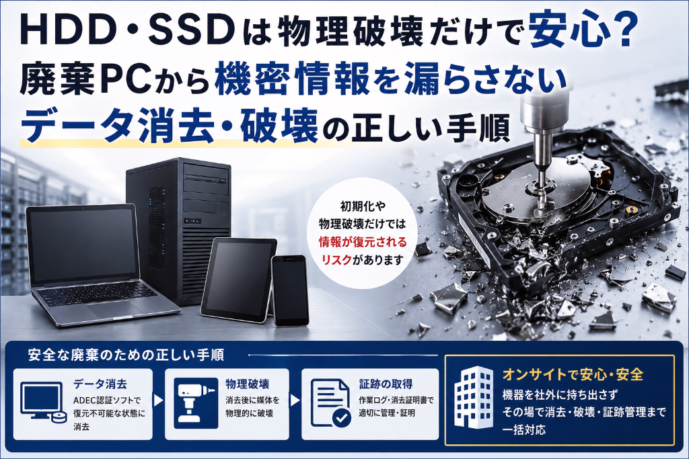
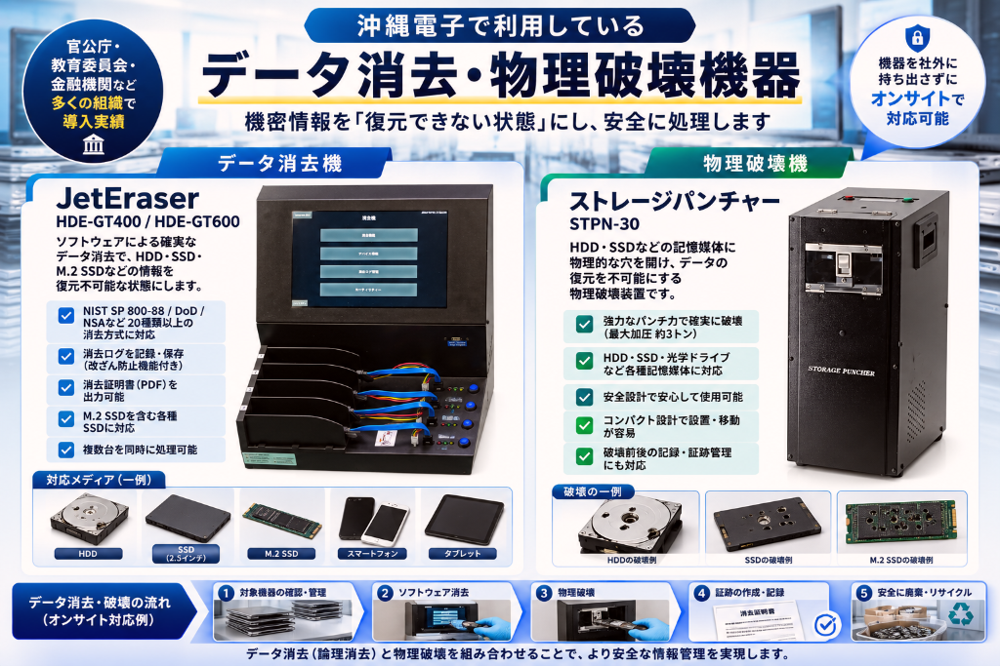

情報資産を、
知識で守る。
〜 データ消去とPC買取のワンストップソリューション 〜
使い終えたPC・サーバーの「確実な消去」「情報を外に出さない回収」「適正な再資源化」を、沖縄電子が実績と知識でワンストップに支援します。
沖縄県内企業で唯一、自社オンサイトでのデータ消去・物理破壊に対応
最短30秒で送信完了・匿名OK／お電話でのご相談も承っております（098-898-2358）※受付後、担当者より折り返しご連絡いたします
ISSUE
PCの入替・廃棄で、
お困りではありませんか？
現場の情シス・総務ご担当者様から、私たちが繰り返し伺うお悩みは、次の4点に集約されます。
倉庫に眠るPC
使い終わった機器が山積みで、貴重な倉庫スペースを圧迫している。
説明責任の不安
データ消去が確実だと、社内外の監査に対して説明できるか自信がない。
コストの増大
廃棄・処分に、想定以上の多額な費用がかかり続けている。
持ち出しリスク
情報を社外に持ち出すこと自体への抵抗があり、処理が止まっている。
そのお悩み、沖縄電子がワンストップで解決します。
IMPORTANT
「廃棄業者に渡したから安心」
ではありません
初期化や物理破壊を「業者に任せた」だけで、本当に情報は復元不可能になっているでしょうか。委託先での作業実態が見えないまま処分すること自体が、新たなリスクになります。

OSの初期化やフォーマットだけでは、専用ツールでデータが復元できてしまう場合があります。
破壊が不十分な場合、破損したメディアからでも一部データが読み取られる可能性があります。
社外の廃棄業者に引き渡した時点で、実際にいつ・どの方法で・誰が消去・破壊したのかを確認できないケースが多くあります。
ソフトウェアによるデータ消去（論理消去）と物理破壊を組み合わせ、対象機器の確認から消去・破壊・証跡の作成・記録、廃棄・リサイクルまでを一括対応。より安全な情報管理を実現します。
CASE STUDY
地元・沖縄で実際に起きた
個人情報流出事故
浦添市役所 業務用PC 83台盗難事件
2026年5月29日発表 — 全市民相当の個人情報が漏えいの恐れ。ヘルプデスク委託会社の社員による内部犯行。
セキュリティ対策のルール自体は定めていたものの、機器の管理体制、データの消去方法等について、具体的な運用手順が定められていなかった状況のなかで、今回の盗難被害にあった
出典：浦添市 公式発表（2026年5月29日、6月30日追記）／ ITmedia NEWS（2026年6月1日）
沖縄電子ならこう防げます（対応イメージ）
-
持ち出しゼロのオンサイト消去
機器を社外に一切出さず、お客様施設内で回収から消去作業までを完結。移動中・保管中の盗難・持ち出しリスクを構造的に排除します。
-
運用手順の明文化と証明書発行
消去方式・対象台数・作業担当者を記録し、「作業報告書」「消去証明書」を発行。監査・説明責任にそのまま活用できます。
-
資産台帳との一元管理
シリアル番号単位で入庫〜消去〜出庫までを追跡管理し、「何台預かって、何台消去したか」の抜け漏れを防止します。
-
複数名によるダブルチェック体制
消去作業は複数名で実施・相互確認し、責任の所在と作業の実在性を明確化します。
EQUIPMENT
沖縄電子で利用している
データ消去・物理破壊機器
機密情報を「復元できない状態」にし、安全に処理します。専用機器による消去・破壊を、社外に機器を持ち出さずオンサイトで対応可能です。

データ消去機｜JetEraser
HDE-GT400 / HDE-GT600ソフトウェアによる確実なデータ消去で、HDD・SSD・M.2 SSDなどの情報を復元不可能な状態にします。
- NIST SP 800-88／DoD／NSAなど20種類以上の消去方式に対応
- 消去ログを記録・保存（改ざん防止機能付き）
- 消去証明書（PDF）を出力可能
- M.2 SSDを含む各種SSDに対応
- 複数台を同時に処理可能
物理破壊機｜ストレージパンチャー
STPN-30HDD・SSDなどの記憶媒体に物理的な穴を開け、データの復元を不可能にする物理破壊装置です。
- 強力なパンチ力で確実に破壊（最大加圧 約3トン）
- HDD・SSD・光学ドライブなど各種記憶媒体に対応
- 安全設計で安心して使用可能
- コンパクト設計で設置・移動が容易
- 破壊前後の記録・証跡管理にも対応
これらの専用機器をお客様施設内に持ち込み、機器を社外に持ち出さずにその場で消去・破壊・証跡管理まで一括対応。沖縄県内企業で唯一、オンサイトでのデータ消去・物理破壊に対応しています。
SOLUTION
情報資産を、知識で守る。
ワンストップソリューション
お問い合わせから消去・回収・再資源化・報告まで、すべてを沖縄電子が一括対応します。
データ消去
ソフトウェア消去・磁気消去・物理破壊の3方式から、機密性に応じた最適な消去方法をご提案。
オンサイト対応
お客様施設内での出張消去・回収に対応し、情報を社外に持ち出さない運用を実現します。
PC買取
市場価格に基づく適切な査定で、廃棄コストを削減。年間12,000台以上の買取実績。
リユース・リサイクル
再利用可能な機器は整備のうえ再販、利用不可の部材はレアメタルとして適正処理。
CO₂レポートオプション
ご要望に応じて、再資源化による環境貢献度をレポートとして発行。サステナビリティ報告にも活用可能です。
WHY US
選ばれる理由
創業。PCハードウェアプロショップとしての歴史と知見
年間の法人PC買取実績
1度の依頼での大量受入実績
自社オンサイトでのデータ消去・物理破壊に対応
沖縄県内で圧倒的な買取り実績を持つ沖縄電子が、市場価格を把握したうえで適切な価格を無料査定。データ消去では、お客様の情報の機密性に応じた消去方法をご提案します。
FLOW
ご依頼から完了までの流れ
お問い合わせ
お電話にて、ご状況・機器台数をお聞かせください。
無料査定・お見積り
担当者が伺い、消去方式・買取価格をご提示（無料）。
ご依頼・日程調整
内容にご同意いただけましたら、回収日時を確定します。
オンサイト消去・回収
ご希望に応じ、施設内での消去・梱包不要での回収に対応。
証明書発行
消去証明書を発行し、完了となります。CO₂削減レポートはご要望に応じて発行いたします（オプション）。
まずはお気軽にご相談ください。
倉庫のPC・サーバーの処分、データ消去の運用にお悩みでしたら、沖縄電子にお任せください。
受付時間：平日 9:00〜18:00 ／ お電話でのご相談も承っております（098-898-2358）※受付後、担当者より折り返しご連絡いたします